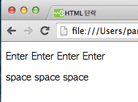

HTML 절(단락) 태그<p>와 줄바꿈 태그<br>
목록
1. html 문단
단락은 <p>태그로 정의된다.
<p>태그 후에는 브라우즈가 자동으로 빈 줄을 추가한다.
대부분의 브라우즈 종료태그</p>를 생략해도 제대로 보여주지만 생략하지 않도록 하자.
<p>This is a paragraph</p>
<p>This is another paragraph</p>
2. 줄바꿈 태그
새 단락을 시작하지 않고 줄 바꿈을 하려는 경우에는 <br>태그를 사용한다.
<br>태그는 안 요소를 가지지 않는 태그로 종료 태그가 없다.
<p>This is<br>a para<br>graph with line breaks</p>
3. 편집툴에서 엔터 와 스페이스 입력
브라우즈는 엔터키와 스페이스를 통한 줄바꿈과 여러 공백은 무조건 한칸의 공백으로 간주한다.
<!DOCTYPE html>
<html>
<body>
<p>
Enter
Enter
Enter
Enter
</p>
<p>space space space </p>
</body>
</html>
